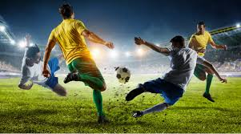
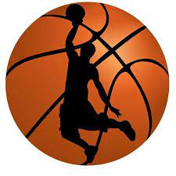
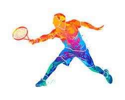
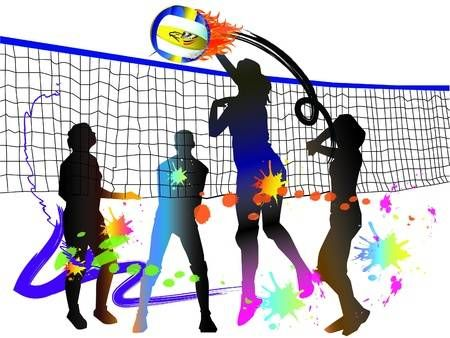

hola gente de todo el mundo, soy Jeremias y esta es la primera pagina web que realizo con html
hoy vamos a hablar de deportes y algunos referentes
| deportes | año que se creo u oficializo | referentes del deporte |
|---|---|---|
| Futbol  | Su creación es atribuida a Inglaterra, país que reglamentó el juego en 1863 a través de la Football Association (FA) | Lionel Messi |
| Basquet  | Naismith inventó el baloncesto en 1891. Trece reglas básicas guiaron el juego, que incluía dos cestas de melocotón como objetivo del juego y donde había que introducir una pelota. | Michael Jordan |
| Tenis  | El rey Carlos IX le otorgó un estatuto a la Corporación de Profesionales del Tenis en 1571, creando el primer 'tour' de tenis, estableciendo tres niveles de profesionalismo: aprendiz, asociado y máster | Rafael Nadal |
| Voley  | El primer partido del nuevo deporte tuvo lugar el 7 de julio de 1896, en la Universidad de Springfield. | Andrea Giani |